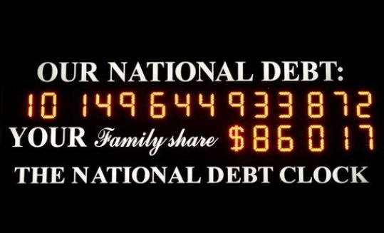

Problem D: Digits

A googol written out in decimal has 101 digits. A googolplex has
one plus a googol digits. That's a lot of digits!
Given any number x0, define a sequence
using the following recurrence:
xi+1 = the number of digits in the decimal representation of xi
Your task is to determine the smallest positive i such that
xi = xi-1.
Input Specification
Input consists of several lines. Each line contains a
value of x0. Every value of x0
is non-negative and has no more than one million digits.
The last line of input contains
the word END.
Sample Input
42
END
Output Specification
For each value of x0 given in the input, output
one line containing the smallest positive i such that
xi = xi-1.
Output for Sample Input
3
Ondřej Lhoták, Malcolm Sharpe